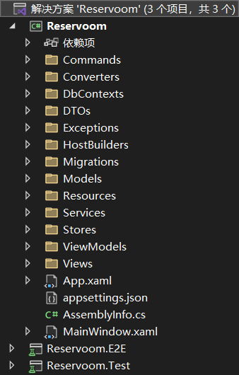

简述
WPF是.NET框架下用于制作Windows桌面应用程序的框架
当然，与UI相关的内容最合适的就是
在WPF中，最值得注意的内容就是
<UserControl
x:Class="Reservoom.Views.MakeReservationView"
xmlns="http://schemas.microsoft.com/winfx/2006/xaml/presentation"
xmlns:x="http://schemas.microsoft.com/winfx/2006/xaml"
xmlns:custom="clr-namespace:LoadingSpinnerControl;assembly=LoadingSpinnerControl"
xmlns:d="http://schemas.microsoft.com/expression/blend/2008"
xmlns:local="clr-namespace:Reservoom.Views"
xmlns:mc="http://schemas.openxmlformats.org/markup-compatibility/2006"
d:DesignHeight="450"
d:DesignWidth="800"
mc:Ignorable="d">
<UserControl.Resources>
<BooleanToVisibilityConverter x:Key="BooleanToVisibilityConverter" />
</UserControl.Resources>
<Grid Grid.IsSharedSizeScope="True">
<Grid.RowDefinitions>
<RowDefinition Height="auto" />
<RowDefinition Height="auto" />
<RowDefinition Height="auto" />
<RowDefinition Height="auto" />
<RowDefinition Height="auto" />
<RowDefinition Height="auto" />
</Grid.RowDefinitions>
更多内容
</Grid>
</UserControl>
可以看得出确实都是各个组件以及其信息，其中最重要的是
分析
这里是以youtube的SingletonSean的WPF MVVM TUTORIAL，
首先使用的是MVVM，所以框架本身怎么都脱离不了Model/View/ModelView三个内容
其次，由于是基于C#(.NET)，微软本身提供了非常多有用的Extensions，比如说这里最实用的Microsoft.Extensions.DependencyInjection)
所以我们先来看一下目录结构：

而E2E其实也是一种单元测试，只是是针对于
我们更需要关注的是本体项目的内容：
- MVVM
- Models
- Views
- ViewModels
- 辅助
- Commands，操作的包装
- Converters，view的可见性绑定
- DbContexts，数据库相关
- DTOs，数据传输对象Data Transfer Object
- Exceptions，异常处理
- HostBuilders，Host相关
- Migrations，EFCore(Entity Framework Core)自动生成
- Services，服务类，用于完成某项任务
- Stores，储存类，用于收集并储存，还可以提供操作
可以看到整体来说就是
核心-MVVM
我们还是先看一下基础的M/V/VM，毕竟这是核心部分，扩展也只会从它们开始扩展
Models
Models我们知道，核心必然是用于存储数据的，但是具体来说是
对于该例来说，分为4个Model：
- Hotel，旅馆本体，核心为存储一本ReservationBook
- ReservationBook，预定簿
- Reservation，预定单，为预定簿的一次预定信息
- RoomID，Reservation中的房间信息
形态1：纯数据
public class Reservation
{
public RoomID RoomID { get; }
public string Username { get; }
public DateTime StartTime { get; }
public DateTime EndTime { get; }
public TimeSpan Length => EndTime.Subtract(StartTime);
public Reservation(RoomID roomID, string username, DateTime startTime, DateTime endTime)
{
RoomID = roomID;
Username = username;
StartTime = startTime;
EndTime = endTime;
}
}
形态2：数据+比较
public class RoomID
{
public int FloorNumber { get; }
public int RoomNumber { get; }
public RoomID(int floorNumber, int roomNumber)
{
FloorNumber = floorNumber;
RoomNumber = roomNumber;
}
public override string ToString()
{
return $"{FloorNumber}_{RoomNumber}";
}
public override bool Equals(object obj)
{
return obj is RoomID roomID &&
FloorNumber == roomID.FloorNumber &&
RoomNumber == roomID.RoomNumber;
}
public override int GetHashCode()
{
return HashCode.Combine(FloorNumber, RoomNumber);
}
public static bool operator ==(RoomID roomID1, RoomID roomID2)
{
if(roomID1 is null && roomID2 is null)
{
return true;
}
return !(roomID1 is null) && roomID1.Equals(roomID2);
}
public static bool operator !=(RoomID roomID1, RoomID roomID2)
{
return !(roomID1 == roomID2);
}
}
形态3：数据+操作
public class Hotel
{
private readonly ReservationBook _reservationBook;
public string Name { get; }
public Hotel(string name, ReservationBook reservationBook)
{
Name = name;
_reservationBook = reservationBook;
}
public async Task<IEnumerable<Reservation>> GetAllReservations()
{
return await _reservationBook.GetAllReservations();
}
public async Task MakeReservation(Reservation reservation)
{
await _reservationBook.AddReservation(reservation);
}
}
所以大致其实就是：
以上三个类都是很好理解的，而剩下的ReservationBook由于使用了
public class ReservationBook
{
private readonly IReservationProvider _reservationProvider;
private readonly IReservationCreator _reservationCreator;
private readonly IReservationConflictValidator _reservationConflictValidator;
public ReservationBook(IReservationProvider reservationProvider, IReservationCreator reservationCreator, IReservationConflictValidator reservationConflictValidator)
{
_reservationProvider = reservationProvider;
_reservationCreator = reservationCreator;
_reservationConflictValidator = reservationConflictValidator;
}
public async Task<IEnumerable<Reservation>> GetAllReservations()
{
return await _reservationProvider.GetAllReservations();
}
public async Task AddReservation(Reservation reservation)
{
if(reservation.StartTime > reservation.EndTime)
{
throw new InvalidReservationTimeRangeException(reservation);
}
Reservation conflictingReservation = await _reservationConflictValidator.GetConflictingReservation(reservation);
if(conflictingReservation != null)
{
throw new ReservationConflictException(conflictingReservation, reservation);
}
await _reservationCreator.CreateReservation(reservation);
}
}
DI简化了类中理解难度，但继承调用链理解起来还是有一定的难度
专注于该类，其实就是：
Views
在WPF中，视图展示就是通过xaml文件完成的，大致就是：
对于该例来说，是通过绑定ViewModel切换界面：
// MainWindow.xmal的切换语句
<ContentControl Content="{Binding CurrentViewModel}" />
在脚本中有所对应：
核心：INotifyPropertyChanged，由OnPropertyChanged()触发PropertyChanged
这意味着每当Store中的CurrentViewModel改变则会触发
public class MainViewModel : ViewModelBase
{
private readonly NavigationStore _navigationStore;
public ViewModelBase CurrentViewModel => _navigationStore.CurrentViewModel;
public MainViewModel(NavigationStore navigationStore)
{
_navigationStore = navigationStore;
_navigationStore.CurrentViewModelChanged += OnCurrentViewModelChanged;
}
private void OnCurrentViewModelChanged()
{
OnPropertyChanged(nameof(CurrentViewModel));
}
}
public class ViewModelBase : INotifyPropertyChanged
{
public event PropertyChangedEventHandler PropertyChanged;
protected void OnPropertyChanged(string propertyName)
{
PropertyChanged?.Invoke(this, new PropertyChangedEventArgs(propertyName));
}
public virtual void Dispose() { }
}
除了切换绑定，还有几种绑定：
// 数据绑定
<TextBox
Grid.Row="1"
Grid.Column="1"
Margin="10,5,0,0"
AutomationProperties.AutomationId="MakeReservationRoomNumberTextBox"
Text="{Binding RoomNumber, UpdateSourceTrigger=PropertyChanged}" />
// 按钮绑定
<Button
AutomationProperties.AutomationId="MakeReservationSubmitButton"
Command="{Binding SubmitCommand}"
Content="Submit" />
// 列表绑定
<ListView ItemsSource="{Binding Reservations}" Visibility="{Binding HasReservations, Converter={StaticResource BooleanToVisibilityConverter}}">
<ListView.ItemContainerStyle>
<Style TargetType="ListViewItem">
<Setter Property="HorizontalContentAlignment" Value="Stretch" />
<Setter Property="AutomationProperties.AutomationId" Value="{Binding RoomID, StringFormat={}{0}_ReservationListingItem}" />
</Style>
</ListView.ItemContainerStyle>
<ListView.View>
// ...
</ListView.View>
</ListView>
绑定可以说是WPF中的重点，也是MVVM的重点，需要着重考虑其原理
ViewModels
ViewModels是MVVM中的核心，比较MVX中都是通过X来沟通Model与View的
与Models一样承担的职责都有所不同：
- MainViewModel，核心VM，用于管理各个VM
- MakeReservationViewModel，预定VM
- ReservationListingViewModel，预定列表展示VM
- ReservationViewModel，Reservation包装
形态情况如下：
- 形态1：数据+绑定(
MainViewModel) - 形态2：数据+绑定+操作(
MakeReservationViewModel/ReservationListingViewModel) - 形态3：数据(
ReservationViewModel)
具体来说对应的就是：
数据
public class ReservationViewModel : ViewModelBase
{
// 很明显，这里就是Reservation的一层包装
// 直接转换为视图所需的string类型，方便后续使用
private readonly Reservation _reservation;
public string RoomID => _reservation.RoomID?.ToString();
// ...
}
绑定
public class MainViewModel : ViewModelBase
{
private readonly NavigationStore _navigationStore;
public ViewModelBase CurrentViewModel => _navigationStore.CurrentViewModel;
public MainViewModel(NavigationStore navigationStore)
{
_navigationStore = navigationStore;
_navigationStore.CurrentViewModelChanged += OnCurrentViewModelChanged;
}
private void OnCurrentViewModelChanged()
{
OnPropertyChanged(nameof(CurrentViewModel));
}
}
操作
public void UpdateReservations(IEnumerable<Reservation> reservations)
{
_reservations.Clear();
foreach (Reservation reservation in reservations)
{
ReservationViewModel reservationViewModel = new ReservationViewModel(reservation);
_reservations.Add(reservationViewModel);
}
}
绑定
前面也提到过，绑定是WPF的关键，所以详细来分析一下绑定：
比较典型的绑定就是属性绑定了：
private string _username;
public string Username
{
get
{
return _username;
}
set
{
_username = value;
OnPropertyChanged(nameof(Username));
ClearErrors(nameof(Username));
if(!HasUsername)
{
AddError("Username cannot be empty.", nameof(Username));
}
OnPropertyChanged(nameof(CanCreateReservation));
}
}
绑定的核心在于其父类ViewModelBase，其声明为：public class ViewModelBase : INotifyPropertyChanged
INotifyPropertyChanged为视图绑定的核心，即调用PropertyChanged事件以触发相应绑定
<TextBox
Grid.Row="1"
Margin="0,5,0,0"
AutomationProperties.AutomationId="MakeReservationUsernameTextBox"
Text="{Binding Username, UpdateSourceTrigger=PropertyChanged}" />
属性本身--- View->ViewModel的绑定，即TextBox的更改事件INotifyPropertyChanged--- ViewModel->View的绑定，即视图刷新
简单解释：
DataContext可能设置于各处，在该项目中有：
// App.cs
services.AddSingleton(s => new MainWindow()
{
DataContext = s.GetRequiredService<MainViewModel>()
});
这意味着DataContext为MainViewModel
// MainWindow.xaml
<Grid.Resources>
<DataTemplate DataType="{x:Type vms:MakeReservationViewModel}">
<views:MakeReservationView />
</DataTemplate>
<DataTemplate DataType="{x:Type vms:ReservationListingViewModel}">
<views:ReservationListingView />
</DataTemplate>
</Grid.Resources>
<ContentControl Content="{Binding CurrentViewModel}" />
这又意味着CurrentViewModel会在MakeReservationViewModel/ReservationListingViewModel两者中切换
更重要的是：
这意味着：
辅助
前面也说了，MVVM仅包含了最重要的部分，其余内容都被拆解为子部分了，那么这里就来详细看一下
Commands
这里先从一个最熟悉的说起，即
命令模式我们都清楚，核心就是一个非常简单的Execute()
在WPF中，有自己的ICommand：
public interface ICommand
{
event EventHandler? CanExecuteChanged;
bool CanExecute(object? parameter);
void Execute(object? parameter);
}
该例中扩展了一点：
public abstract class CommandBase : ICommand
public abstract class AsyncCommandBase : CommandBase
先看执行：
核心：
public ReservationListingViewModel(...)
{
//...
LoadReservationsCommand = new LoadReservationsCommand(this, hotelStore);
//...
}
public static ReservationListingViewModel LoadViewModel(...)
{
//...
viewModel.LoadReservationsCommand.Execute(null);
return viewModel;
}
再看绑定：
以上是一种
但是在WPF中是可以绑定的：
public AsyncCommandBase SubmitCommand { get; }
public ICommand CancelCommand { get; }
public MakeReservationViewModel(...)
{
SubmitCommand = new MakeReservationCommand(this, hotelStore, reservationViewNavigationService);
CancelCommand = new NavigateCommand<ReservationListingViewModel>(reservationViewNavigationService);
// ...
}
在类中，我们无法找到对应的Execute，因为它们在View中：
<Button
AutomationProperties.AutomationId="MakeReservationSubmitButton"
Command="{Binding SubmitCommand}" // 这里
Content="Submit" />
<Button
Margin="10,0,0,0"
Command="{Binding CancelCommand}" // 这里
Content="Cancel">
<Button.Style>
<Style BasedOn="{StaticResource {x:Type Button}}" TargetType="Button">
<Style.Triggers>
<DataTrigger Binding="{Binding IsSubmitting}" Value="True">
<Setter Property="IsEnabled" Value="False" /> // Tip：当IsSubmitting为true时，执行隐藏
</DataTrigger>
</Style.Triggers>
</Style>
</Button.Style>
</Button>
public abstract class CommandBase : ICommand
{
public event EventHandler CanExecuteChanged;
public virtual bool CanExecute(object parameter)
{
return true;
}
public abstract void Execute(object parameter);
protected void OnCanExecutedChanged()
{
CanExecuteChanged?.Invoke(this, new EventArgs());
}
}
public abstract class AsyncCommandBase : CommandBase
{
private bool _isExecuting;
private bool IsExecuting
{
get
{
return _isExecuting;
}
set
{
_isExecuting = value;
OnCanExecutedChanged();
}
}
public override bool CanExecute(object parameter)
{
return !IsExecuting && base.CanExecute(parameter);
}
public override async void Execute(object parameter)
{
IsExecuting = true;
try
{
await ExecuteAsync(parameter);
}
finally
{
IsExecuting = false;
}
}
public abstract Task ExecuteAsync(object parameter);
}
在ICommand中，与INotifyPropertyChanged类似，同样存在绑定
先看上述基础继承链：
在CommandBase中，
可以发现CanExecuteChanged事件+CanExecute()+OnCanExecutedChanged()机制与INotifyPropertyChanged是一致的，所以说：只需在相应处执行OnCanExecutedChanged()并在View中绑定即可
在AsyncCommandBase中，
是异步形式，我们会发现OnCanExecutedChanged()已经被融入到IsExecuting中了，所以说一旦命令执行或结束，都会进行CanExecute()检测
public class MakeReservationCommand : AsyncCommandBase
{
public MakeReservationCommand(...)
{
// 这里绑定到PropertyChanged上了，即可以通过OnPropertyChanged触发OnViewModelPropertyChanged
_makeReservationViewModel.PropertyChanged += OnViewModelPropertyChanged;
}
public override bool CanExecute(object parameter)
{
return _makeReservationViewModel.CanCreateReservation && base.CanExecute(parameter);
}
public override async Task ExecuteAsync(object parameter)
{
// ...
_makeReservationViewModel.IsSubmitting = true;
// 一系列操作
_makeReservationViewModel.IsSubmitting = false;
}
// 触发内容：执行OnCanExecutedChanged，即CanExecuteChanged
private void OnViewModelPropertyChanged(object sender, PropertyChangedEventArgs e)
{
if(e.PropertyName == nameof(MakeReservationViewModel.CanCreateReservation))
{
OnCanExecutedChanged();
}
}
}
以上内容将CanExecute()绑定至OnPropertyChanged()，执行在相应处调用以触发即可：
// MakeReservationViewModel
private string _username;
public string Username
{
get
{
return _username;
}
set
{
_username = value;
OnPropertyChanged(nameof(Username));
ClearErrors(nameof(Username));
if(!HasUsername)
{
AddError("Username cannot be empty.", nameof(Username));
}
// 是这个
OnPropertyChanged(nameof(CanCreateReservation));
}
}
// 还有相关的FloorNumber/StartDate/EndDate都具有该OnPropertyChanged
public bool CanCreateReservation =>
HasUsername &&
HasFloorNumberGreaterThanZero &&
HasStartDateBeforeEndDate &&
!HasErrors;
调用链：Username变更触发OnPropertyChanged(nameof(CanCreateReservation))触发OnViewModelPropertyChanged()执行OnCanExecutedChanged()触发CanExecuteChanged事件，执行CanExecute()并更新激活性
简述：OnCanExecutedChanged()，即执行CanExecute()并更新激活性
总结：Execute()，
同时通过上述流程可通过CanExecute()控制按钮可用性
Host/Services/Stores
在该例中，Services是很重要的：
在核心的App.xaml.cs中大量出现，这其实就是我们所熟知
该例中涉及的服务有这几种：
- ReservationBook工具
- DatabaseReservationConflictValidator
- DatabaseReservationCreator
- DatabaseReservationProvider
- 一般服务
- NavigationService
前三者都是在为ReservationBook服务，而NavigationService显然是导航功能
在该例中，Stores同样是很重要的：
有2个：
- HotelStore---Hotel存储
- NavigationStore---导航存储
而真正的汇总工具为Host：
// App.xaml.cs
public App()
{
_host = Host.CreateDefaultBuilder()
.AddViewModels()
.ConfigureServices((hostContext, services) =>
{
// ...
})
.Build();
}
基本上来说，就是由这三者的配合从而完成构建
接下来详细来看一下：
根据上述内容，可以得知有2个部分：Hotel/Navigation
Hotel分析
Hotel本身是Models中的一个类，也就是旅馆本身，回忆一下，是一个存放了一个ReservationBook并提供GetAllReservations()/MakeReservation()以创建或获取的类
public App()
{
_host = Host.CreateDefaultBuilder()
.AddViewModels()
.ConfigureServices((hostContext, services) =>
{
// ...
// 创建ReservationBook的前提
services.AddSingleton<IReservationProvider, DatabaseReservationProvider>();
services.AddSingleton<IReservationCreator, DatabaseReservationCreator>();
services.AddSingleton<IReservationConflictValidator, DatabaseReservationConflictValidator>();
// 创建Hotel的前提
services.AddTransient<ReservationBook>();
// 创建HotelStore的前提
string hotelName = hostContext.Configuration.GetValue<string>("HotelName");
services.AddSingleton((s) => new Hotel(hotelName, s.GetRequiredService<ReservationBook>()));
services.AddSingleton<HotelStore>();
// ...
})
.Build();
}
为了创建HotelStore，我们需要先创建构造函数所需的Hotel，
为了创建Hotel，我们需要先创建构造函数所需的ReservationBook，
为了创建ReservationBook，我们需要先创建构造函数所需的3个服务工具
由此逻辑也清晰了起来，我们也能得知：
// ReservationBook中
public async Task<IEnumerable<Reservation>> GetAllReservations()
{
return await _reservationProvider.GetAllReservations();
}
public class DatabaseReservationProvider : IReservationProvider
{
private readonly IReservoomDbContextFactory _dbContextFactory;
public DatabaseReservationProvider(IReservoomDbContextFactory dbContextFactory)
{
_dbContextFactory = dbContextFactory;
}
public async Task<IEnumerable<Reservation>> GetAllReservations()
{
using (ReservoomDbContext context = _dbContextFactory.CreateDbContext())
{
IEnumerable<ReservationDTO> reservationDTOs = await context.Reservations.ToListAsync();
return reservationDTOs.Select(r => ToReservation(r));
}
}
private static Reservation ToReservation(ReservationDTO dto)
{
return new Reservation(new RoomID(dto.FloorNumber, dto.RoomNumber), dto.Username, dto.StartTime, dto.EndTime);
}
}
而
public HotelStore(Hotel hotel)
{
_hotel = hotel;
_initializeLazy = new Lazy<Task>(Initialize);
_reservations = new List<Reservation>();
}
// 以及一些操作函数
public async Task MakeReservation(Reservation reservation)
{
await _hotel.MakeReservation(reservation);
_reservations.Add(reservation);
OnReservationMade(reservation);
}
所以说封装是有必要的
大致阅读代码可发现，HotelStore的核心为：
Load()---延迟执行的初始化，用于更新_reservationsMakeReservation()---添加新预定，并更新到_reservations
所以可以发现_reservations是HotelStore中添加的重要内容
其目的当然是_reservations:
// LoadReservationsCommand
public override async Task ExecuteAsync(object parameter)
{
// ...
try
{
await _hotelStore.Load();
_viewModel.UpdateReservations(_hotelStore.Reservations); // 用于更新真正VM的数据
}
catch (Exception) {...}
// ...
}
由此我们也能看出：HotelStore._reservations并非最终数据，而应该是ReservationListingViewModel._reservations
简单描述一下它们的区别：
Reservation---一个Model，是预定信息本体HotelStore._reservations---Hotel本身具有一个ReservationBook，可以认为是Reservation列表，HotelStore作为一个存储管理类进行了一次包装ReservationListingViewModel._reservations---ViewModel作为真正的视图刷新数据通过HotelStore._reservations封装成了ReservationViewModel列表供视图刷新使用
Navigation分析
Navigation指的是导航功能，简单来说就是
与其相关的当然是NavigationService与NavigationStore
先来看一下Service的声明：public class NavigationService<TViewModel> where TViewModel : ViewModelBase
这说明了：
- NavigationService是泛型，存在多个
- 需要的TViewModel是ViewModel
结合代码可以推论：
NavigationService的代码如下：
public class NavigationService<TViewModel> where TViewModel : ViewModelBase
{
private readonly NavigationStore _navigationStore;
private readonly Func<TViewModel> _createViewModel;
public NavigationService(NavigationStore navigationStore, Func<TViewModel> createViewModel)
{
_navigationStore = navigationStore;
_createViewModel = createViewModel;
}
public void Navigate()
{
_navigationStore.CurrentViewModel = _createViewModel();
}
}
从该脚本我们就可以看出：_navigationStore是一个管理CurrentViewModel的地方，同时仅存在一个ViewModel，通过NavigationService.Navigate()可延迟调用初始化工厂以更新CurrentViewModel
最终存放处：MainViewModel.CurrentViewModel
调用有2种：
一种当然是App.xaml.cs的初始化：
protected override void OnStartup(StartupEventArgs e)
{
// ...
// 初始化使用ReservationListingViewModel
NavigationService<ReservationListingViewModel> navigationService = _host.Services.GetRequiredService<NavigationService<ReservationListingViewModel>>();
navigationService.Navigate();
// ...
}
另一种是被封装为Command：
- 在初始列表界面ReservationListingViewModel时
- MakeReservationCommand(
NavigateCommand<MakeReservationViewModel>)可进入预定界面
- MakeReservationCommand(
- 在预定界面MakeReservationViewModel时
- CancelCommand(
NavigateCommand<ReservationListingViewModel>)可回退至列表界面 - SubmitCommand(
MakeReservationCommand)也回退至列表界面，但会进行额外的更新列表操作
- CancelCommand(
总结
总的来说，这是一个非常完整的项目，它通过大量.NET库辅助完成的项目
虽然它
但作为一个完整项目，这种拆分其实应该是比较好的一种构建，只是需要个人具有一定的熟练度才能比较容易地看懂
从MVVM的角度进行分析：
前面也提到过，MVVM本身就是一种框架用于联系数据与视图
在WPFMVVM中，我认为
细节方面实在过于复杂，我这里先列举出网上的信息：
- 绑定依赖于：
- DependencyProperty
- 反射
- 事件(INotifyPropertyChanged)
绑定带来的最大的一个好处就是
所以说：
那么就从表层来看一下吧：
- 在WPF中，显示的基础是创建一个MainWindow，其中存储了DataContext，而DataContext是某个ViewModel
- ViewModels中有属性，在View中需要Binding，也就是：
用户输入->set方法触发(含事件回调INotifyPropertyChanged)->视图变更 - 各项模块：
- Models---纯数据+数据操作函数
- Views---纯视图+绑定(与ViewModel)
- ViewModels---Models的包装，具有View所想要的数据并在set方法中有事件回调(INotifyPropertyChanged)
- Stores---Models的包装，是"共享容器"，用于提供某些属性
- Services---服务，其实就是功能函数，供其它类使用
- 各项模块最终会在App.xaml.cs，也就是主函数中通过DI的方式注册与使用
而Stores是一种在Models之上，ViewModels之下的数据，包装Models后唯一存在，供ViewModels使用
虽然不分析底层，我们无法得知真正的流程，但是我们最起码还是了解了ViewModels与Models/Views的关系，简单来说：
- 绑定数据，如
MakeReservationViewModel.Username - 数据的数据，如
ReservationViewModel类的属性，在ReservationListingViewModel中有字段：ObservableCollection<ReservationViewModel> _reservations